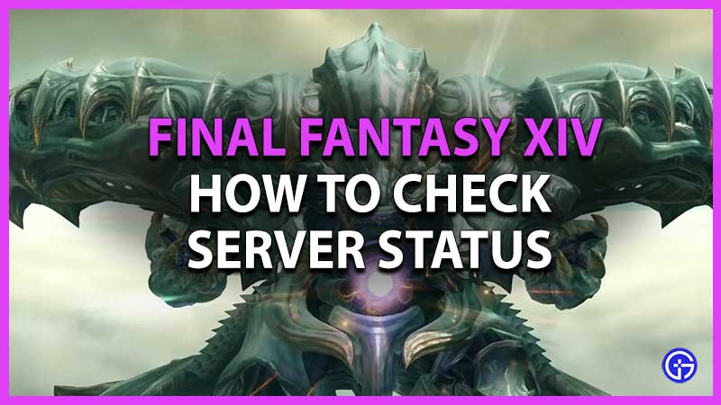

(
(
Best Servers to Join in Final Fantasy XIV
Final Fantasy XIV offers nearly a hundred servers to play on. It can be challenging to figure out what server to join when you initially jump into the game. There are several to pick from, regardless of your region. Therefore, here will show how to choose the best servers and list the best servers in FFXIV.
How to Choose the Best Servers in Final Fantasy XIV?

If you need help choosing your Home Server for your character, here is how to select the best servers to join in FFXIV:
1). The ping
Whatever server you join, the first criteria to consider is the ping. You should aim to choose the closest server from your geographical location.
2). The server's population
The second criteria are the server's population. However, it can be hard to grasp this information as the population evolves constantly. The developer specifically puts efforts into balancing out the population on all of their servers. For this reason, players won't be able to add a new character on the most crowded servers and will get significant bonuses if they create one on an underrepresented server. The developer regularly updates the server's status to adjust to the evolution of their player base.
If there's a red sign on the right of the server's name, you won't be able to create a new character because it's overcrowded. There should also be the term "Congested" on the side.
3). The servers offering bonuses
On the other hand, the servers offering bonuses, which include a double XP boost for all jobs for a significant amount of time, will have the status "New" or "Preferred."
4). Joining a more crowded server
Some advantages to joining a more crowded server include lower prices on the Market Board, but it will likely feature longer login queues. A less-crowded server will have shorter queues and more accessible housing, but usually higher prices on the Market Board.
5). The trends pushed by the community
The last criteria that can determine your choice of server is the trends pushed by the community. Some are more focused on role-playing or PvP, and others are mainly populated by players speaking specific languages. Here is the list of the servers with those particular trends:
North America
• Aether: favors hardcore raiders
• Crystal: favors role-playing oriented players
Europe
• Cerberus: favors Russian-speaking players
• Moogle: favors French-speaking players
• Shiva: favors German-speaking players
Oceania
Although there are trends on those servers, the developer has never declared a server officially oriented towards a playstyle or a language. In addition, thanks to server travel, it's easy to switch servers when playing. This has diminished the differences in the identity of each server, so its location and population remain the main criteria to help you make your decision.
Best Servers to Join in Final Fantasy XIV
One of the best FFXIV servers preferred to join is Faerie in Aether Data Center in North America. But both Primal and Crystal servers are also excellent to enter for a fantastic Final Fantasy 14 experience. If you are from other regions, here's our list of the best Final Fantasy XIV servers in each data center:
1). Aether – North America
If you're starting, you should consider joining the Faerie server. It's very accommodating to new players and has a thriving, talkative community that's down for playing and chatting.
2). Primal – North America
If you want to get serious about this game, join Levithan, Primal's premier raiding server. These folks play for keeps, so this is the place if you want to go hardcore.
3). Crystal – North America
If role-playing's your shtick, try Balmung, the largest role-playing community in Final Fantasy XIV. It tends to be a bit crowded, but at least that means there's always something to do.
4). Chaos – Europe
If you're looking for a chill server to play at your own pace, go for Cerberus. Everyone mostly keeps to themselves around here.
5). Light – Europe
If you're a bit of a waffler between casual and hardcore play, the Phoenix server has a good blend of both kinds of players to hang out with.
6). Elemental – Japan
The Tonberry server is the unofficial English-speaking embassy of the Japanese data centers. Japanese player norms are dominant here, but English speakers from Australia, New Zealand, and Southeast Asia.
7). Gaia – Japan
If you're looking for an introduction to Japanese gaming etiquette, try the Ifrit server. You'll need to know Japanese to communicate, but the players are well-known for being friendly and patient.
8). Mana – Japan
If community events are what you're looking for, you'd love Ixion. This server regularly hosts various community events open to all players, including cafes and live art draws.
That's all about the best FFXIV Servers to join right away. If you are looking for more FFXIV secrets, check out BUYFFXIV4GIL.COM's news pages like How to Make Final Fantasy 14 Gil and Earn MGP Fast.